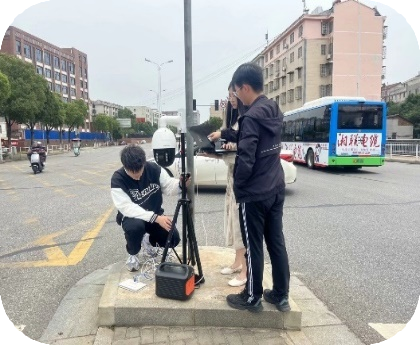
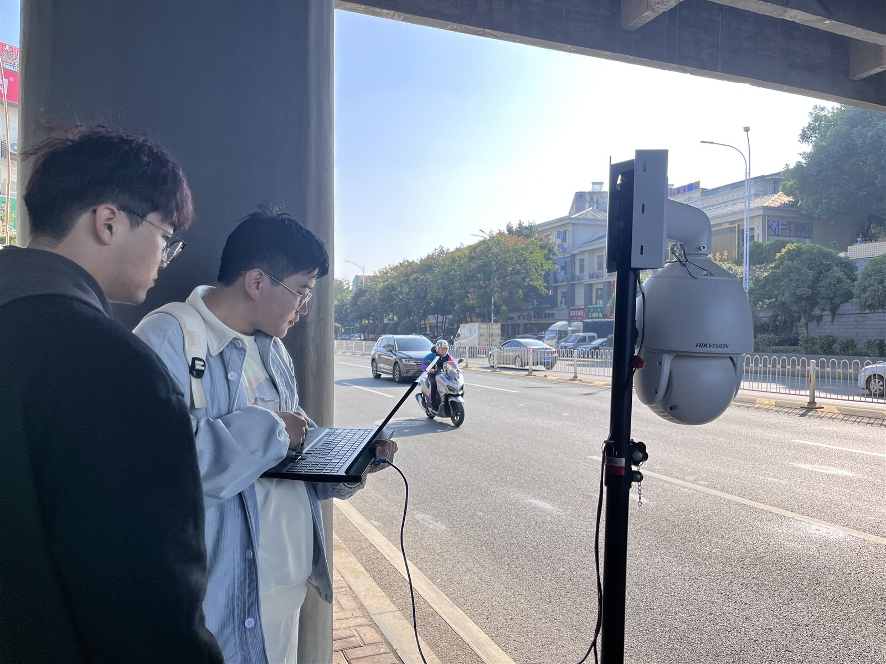
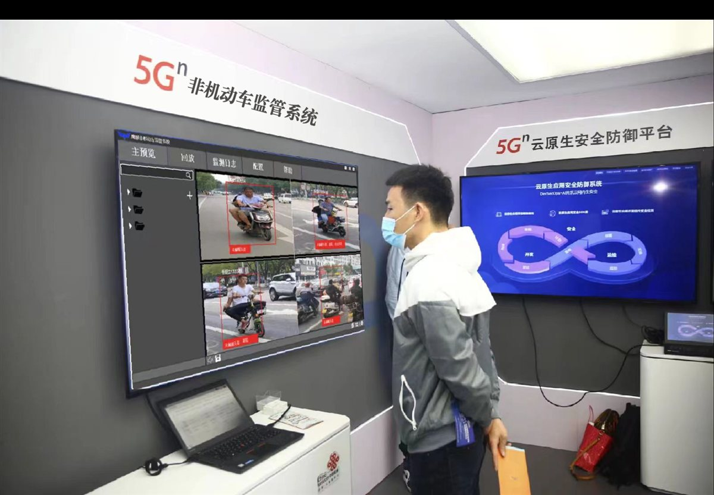
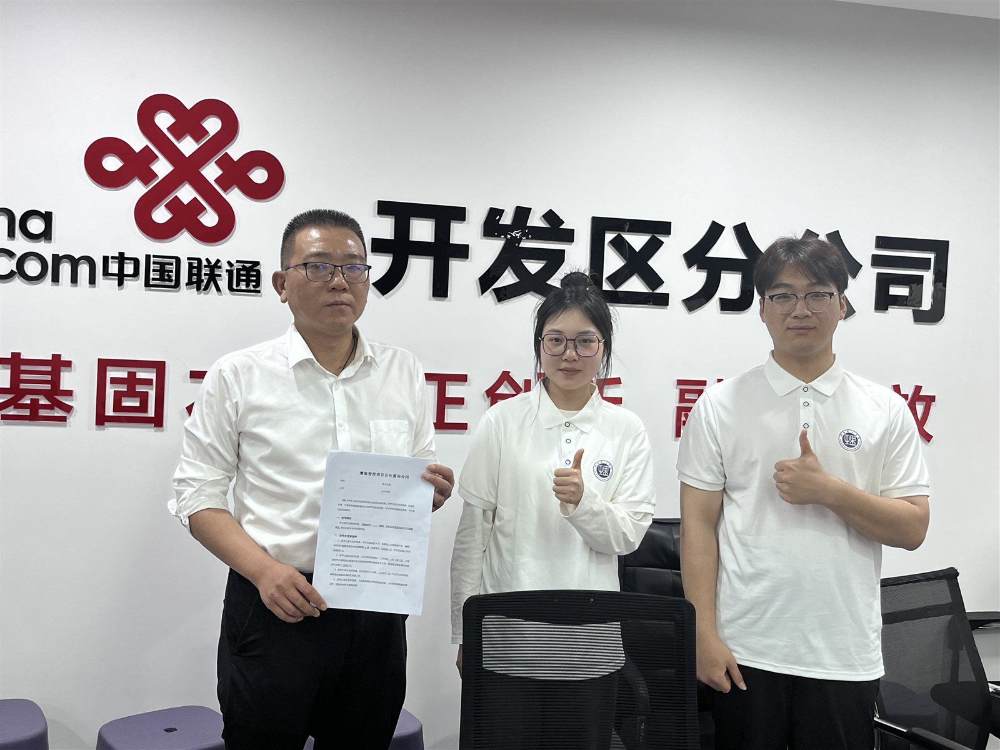

采集
鹰眼摄像头获取图像和视频
Self Introduction
从竞赛到科研，把每一步的想法一步步做成作品。
Eagle Eye / Product
岳阳市首款智能化非机动车交通安全监管系统，集采集、识别、提取、分析、管理、通知于一体的一站式监管闭环。
鹰眼摄像头获取图像和视频
鹰眼系统算法对图像与视频进行识别判定
鹰眼系统算法对图像与视频进行信息提取
对违规信息进行分析
收录违规者的所有必要信息
发送短信告知违规者
违规信息自动短信告知违规者，交管部门对违规者依法惩处，形成完整监管闭环。
Key Technology
两套自研算法、两篇软著支撑，攻克非机动车监管的“识别难”与“判别难”。
两套核心算法均获软件著作权支撑，鹰眼智控系统申请软著专利。
解决“识别难”问题
自研基于自适应特征学习的多目标检测算法，与常用目标识别算法相比，准确率与识别速度更胜一筹。
公开数据集 BDD100K 与团队自主采集修正，共 100000+ 样本训练
解决“判别难”问题
自研基于多模态融合的目标跟踪与行为识别算法，相比传统 YOLOv5 + DeepSORT + SlowFAST 算法组合，行为识别准确率更胜一筹。
OTB 系列、NFS、GOT 数据集与团队自主采集修正，共约 328GB+ 视频序列
Field Application
从城市路口到企业机房，真实场景中的表现与好评。
鹰眼二代抓捕量逼近人工审核水平，远超同类产品（首日数据）。
验证产品效果，获得高度赞赏
“此产品应用后将会极大程度上规范广大骑手的驾驶行为。”
—— 岳阳市岳阳楼区交警支队大队长 候俊


二代产品实地测试效果优异，且得到交通部门高度赞扬。
验证产品性能优越，效果显著


“系统实际应用效率很高，抓取图像清晰度相当高清，放大后仍能明了呈现；高效的反馈机制有助于安全风险的快速识别与处置，建议扩大试用规模。”
—— 技术检测员反馈 · 2024年3月 · 中国联通岳阳市开发区分公司
企业反馈：验证成像质感好，判别准确。